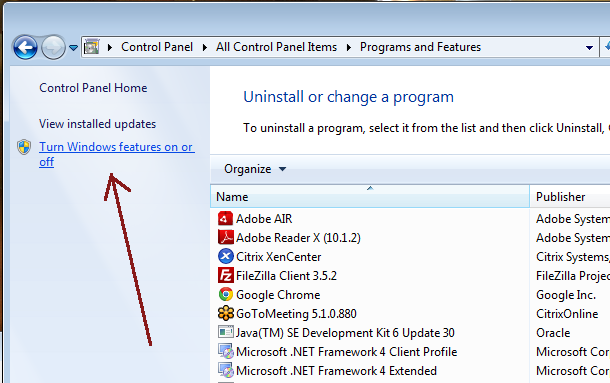
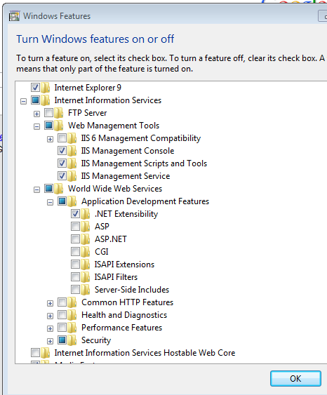
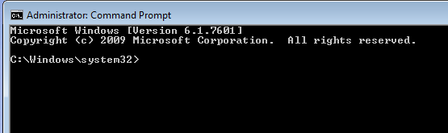
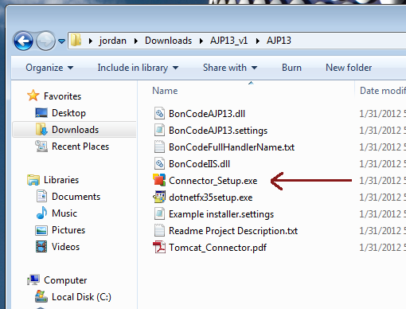
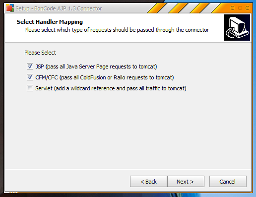
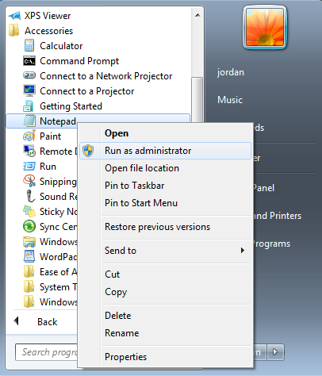
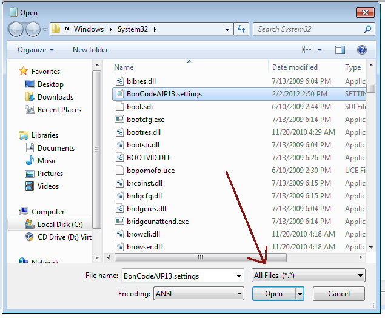

IIS on Windows
Install mod_cfml to IIS on Windows
The following steps cover all the steps necessary to install the BonCode Connector module into IIS on a Windows System and enable mod_cfml support from within the connector. The steps are intended to be thorough, so you may not need to take each step on your own system. For example, you may already have IIS and some of the required modules installed on your system.
IMPORTANT: The following tutorial describes the installation of the BonCode Connector for 32-bit Windows 7 Professional. You may need to adjust these directions slightly to match your Windows system version.
Installing IIS
If you don't already have IIS installed on your system, you can install it by taking the following path:
-> Control Panel -> Programs and Features -> Turn Windows features on or off
Next find the "Internet Information Services" (IIS), and check it to mark that you want to install IIS. I also recommend installing ".NET Extensibility" here as it will shorten the install for the BonCode Connector:
Hit "OK" and let Windows do it's thing. When you're done, you should be able to hit the following URL and get the IIS welcome page:
http://127.0.0.1/
Preparing Your System for the The BonCode Connector
The BonCode Connector by Bilal Soylu is a complete connector package. It does not need to be installed alongside anything else like the mod_cfml.so Apache module does. Further, if you already have a connector installed, such as the Tomcat isapi_redirect.dll connector, that connector will need to be removed before you install the BonCode Connector in order to avoid conflicts.
IMPORTANT: Installing the BonCode Connector along with Tomcat's isapi_redirect.dll can cause conflicts and irregularities.
If you installed an open-source CFML engine using either the Railo Installer or OpenBD Installer, removing the Tomcat isapi_redirect.dll connector is very easy. The Installers come with a batch file that automates the connector's removal from your system. To run the batch file, simply open a command-line window in Administrative mode. In Windows 7 Professional, you can do that with the following:
Start -> All Programs -> Accessories -> Right -click the "Command Prompt" icon and select "Run as Administrator"
If you successfully started a command-line window as the Administrator, your command line window will read: "Administrator: Command Prompt", like so:

Next navigate to the [Install Dir]\connector\ directory. Usually this is c:\railo\connector:
> cd c:\railo\connectorNext, run the removal batch file. For IIS7, the removal script is iis7remove.bat:
> iis7remove.batObviously, if you're running IIS6, you'll want to run iis6remove.bat.
Last, you'll want to ensure to remove any "jakarta" directories from any previous CFML-enabled sites. The "jakarta" directory is no longer needed with the BonCode Connector.
Installing the BonCode Connector
If you haven't already, take a moment to go download the BonCode Connector: http://www.boncode.net/boncode-connector
Next, go ahead and launch the BonCode Connector installer:
When you get to the screen that ask you if you want the BonCode Connector applied to All Sites or to Individual Sites, it is recommended that you select "All IIS Sites". Selecting this method should reduce the amount of work it takes to administer each site.
IMPORTANT: Do not attempt to run the installer if you have pending system updates. Many updates prevent the installation of additional software until the updates have been fully installed with a reboot. Finish installing the updates, then install the connector.
It is also recommended that you pass all JSP or CFM or CFC requests off to Tomcat. This will ensure that anything Tomcat-related gets passed to Tomcat.
IMPORTANT: Installation can take several minutes as the installer configures the various software packages and installs the software it needs to do it's job. Please be patient.
You should now be able to create sites and hit the CFML files within them and get a response from Tomcat and the CFML engine, but your CFML files will not be resolving to the right spots yet! This is where the mod_cfml tomcat valve comes in.
Configuring the BonCode Connector for use with mod_cfml
Next we need to configure the BonCode connector to pass on the information that the Tomcat Valve will need in order to dynamically create the hosts. To do this, we need to edit the connector's "BonCodeAJP13.settings" file. If you installed the connector into "All Sites", then this file will be in the Windows system32 directory:
> c:\windows\system32\BonCodeAJP13.settingsIf you installed the connector on a per-site basis, then the "BonCodeAJP13.settings" file will be in the "BIN" directory inside your site's home directory. For example, for the IIS "Default Site", the home directory is "c:\inetpub\wwwroot", so the settings file we want will be in:
> c:\inetpub\wwwroot\BIN\BonCodeAJP13.settingsIn order to edit these files, you may need to edit it with a copy of notepad running under the Administrator user. You can do this usually by right clicking the "Notepad" icon in the start menu and selecting "Run as Administrator", like so:
Once you have notepad running under the Administrator user, go to File -> Open, and navigate to the c:\windows\system32 directory. You may need to select "All Files" from the drop down file filter:
There are a LOT of files in the system32 folder, but they should be sorted alphabetically which should help you find the right file.
We need to add the following option to the setting file:
<EnableHeaderDataSupport>True</EnableHeaderDataSupport>I just added my line to the last line of the configs, so that my config file looks like this now:
<Settings>
<Port>8009</Port>
<Server>localhost</Server>
<MaxConnections>200</MaxConnections>
<LogLevel>0</LogLevel>
<FlushThreshold>0</FlushThreshold>
<EnableRemoteAdmin>False</EnableRemoteAdmin>
<EnableHeaderDataSupport>True</EnableHeaderDataSupport>
</Settings>The BonCode Connector should pick up the changed config almost immediately. You should be all set!